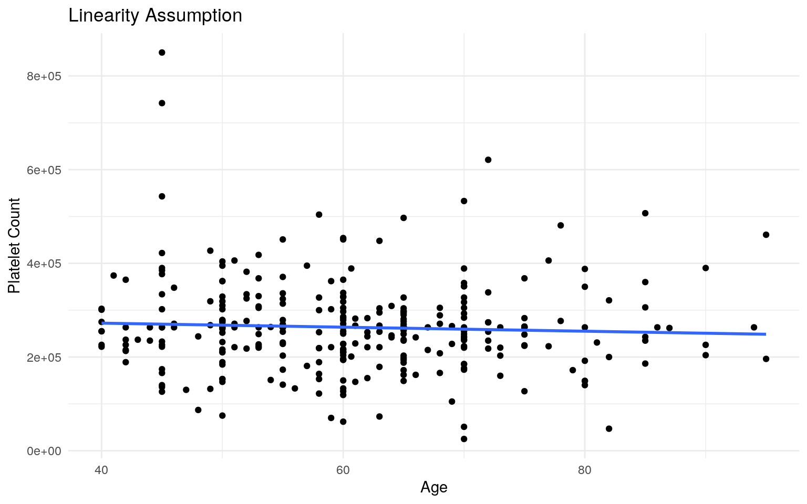

library(ggplot2)
library(cluster)
library(plotROC)
library(readr)
library(tidyverse)
library(MASS)
library(glmnet)
heartfailure <- read_csv("heartfailure.csv")The dataset used in this lab has a total of 14 variables and 299 observations. The main variables used in this lab are platelets, deaths, age, smoking, diabetes, and sodium. The variable “platelets” measured the total count of platelets present in each patient’s blood. The “death” variable signified whether the patient had heart failure. “Yes” means the patient died due to heart failure, while “No” means the patient didn’t have heart failure. The variable “age” reported the patient’s age. The variable “smoking” signified if the patient smoked. Diabetes signified if the patient had diabetes. And lastly, the second numerical variable “sodium” represented the patients’ sodium blood levels.
#MANOVA (1)
manova <- manova(cbind(age ,sodium, platelets)~ death, data=heartfailure)
summary(manova)## Df Pillai approx F num Df den Df Pr(>F)
## death 1 0.098759 10.775 3 295 9.706e-07 ***
## Residuals 297
## ---
## Signif. codes: 0 '***' 0.001 '**' 0.01 '*' 0.05 '.' 0.1
' ' 1I first conducted a MANOVA test to see if age, sodium levels, and platelets count had a significant effect on death (from heart failure). The results from the test indicate that the response variables signficantly differ by levels of the categorical explanatory variable.
#UNIVARIATE ANOVA (2,3,4)
summary.aov(manova)## Response age :
## Df Sum Sq Mean Sq F value Pr(>F)
## death 1 2714 2714.38 20.436 8.917e-06 ***
## Residuals 297 39449 132.82
## ---
## Signif. codes: 0 '***' 0.001 '**' 0.01 '*' 0.05 '.' 0.1
' ' 1
##
## Response sodium :
## Df Sum Sq Mean Sq F value Pr(>F)
## death 1 221.1 221.084 11.765 0.0006889 ***
## Residuals 297 5581.0 18.791
## ---
## Signif. codes: 0 '***' 0.001 '**' 0.01 '*' 0.05 '.' 0.1
' ' 1
##
## Response platelets :
## Df Sum Sq Mean Sq F value Pr(>F)
## death 1 6.8831e+09 6883065405 0.7189 0.3972
## Residuals 297 2.8437e+12 9574701084Next, I conduced an ANOVA test for each of the response variables. After looking at the data and ANOVA values, I can conclude that sodium levels and age are significantly different based on whether or not the patients had died from heart failure.
#POST HOC TEST
#age (5)
pairwise.t.test(heartfailure$age, heartfailure$death, p.adj="none")##
## Pairwise comparisons using t tests with pooled SD
##
## data: heartfailure$age and heartfailure$death
##
## No
## Yes 8.9e-06
##
## P value adjustment method: none#sodium levels (6)
pairwise.t.test(heartfailure$sodium, heartfailure$death, p.adj="none")##
## Pairwise comparisons using t tests with pooled SD
##
## data: heartfailure$sodium and heartfailure$death
##
## No
## Yes 0.00069
##
## P value adjustment method: none#platelets (7)
pairwise.t.test(heartfailure$platelets, heartfailure$death, p.adj="none")##
## Pairwise comparisons using t tests with pooled SD
##
## data: heartfailure$platelets and heartfailure$death
##
## No
## Yes 0.4
##
## P value adjustment method: noneNext, I conduced a Post - hoc analysis to find which groups differ. Both, age and sodium levels had p- values less than 0.5. However, when comparing death and platelet level, the p-value was greater than 0.05. Since the p value of 0.4 was greater than 0.05, I can conclude that that platelet amount did significantly differ in patients who did not have heart failure versus in patients who did have heart failure
#Type 1 Error
1-(1-0.05)^7## [1] 0.3016627#Bonferroni Correction
0.05/7## [1] 0.007142857The probability of a Type 1 error occurring you is 30.16%. To keep the error at 0.05, the new adjusted significance level should be .007.
#Adjusted T - tests
#age
pairwise.t.test(heartfailure$age, heartfailure$death, p.adj="bonf")##
## Pairwise comparisons using t tests with pooled SD
##
## data: heartfailure$age and heartfailure$death
##
## No
## Yes 8.9e-06
##
## P value adjustment method: bonferroni#sodium levels
pairwise.t.test(heartfailure$sodium, heartfailure$death, p.adj="bonf")##
## Pairwise comparisons using t tests with pooled SD
##
## data: heartfailure$sodium and heartfailure$death
##
## No
## Yes 0.00069
##
## P value adjustment method: bonferroni#platelets
pairwise.t.test(heartfailure$platelets, heartfailure$death, p.adj="bonf")##
## Pairwise comparisons using t tests with pooled SD
##
## data: heartfailure$platelets and heartfailure$death
##
## No
## Yes 0.4
##
## P value adjustment method: bonferroniNext, I re-performed the Post-HOC tests using the new adjusted (bonferroni correction) significance level. Looking at the data, there was no difference p - values. The MANOVA assumptions were most likely not met, since there are so many assumptions.
#Mean Difference - since one variable is numeric and the other is categorical
random_dist<-vector()
for(i in 1:5000){
newdata<-data.frame(platelets=sample(heartfailure$platelets),death=heartfailure$death)
random_dist[i]<-mean(newdata[newdata$death =="No",]$platelets )-
mean(newdata[newdata$death =="Yes",]$platelets)
}Hypothesis: Null (Ho): The mean blood platelet count is the same in patients with heart failure vs in patients with no heart failure.
Alternative (Ha):The mean blood platelet count is not the same in patients with heart failure vs in patients with no heart failure.
t.test(data=heartfailure, platelets~death)##
## Welch Two Sample t-test
##
## data: platelets by death
## t = 0.84479, df = 184.79, p-value = 0.3993
## alternative hypothesis: true difference in means is not
equal to 0
## 95 percent confidence interval:
## -13722.84 34275.73
## sample estimates:
## mean in group No mean in group Yes
## 266657.5 256381.0#plot of distribution
hist(random_dist)The P - value for the test is 0.3993, which is greater than alpha (0.5). Since the value is greater than alpha, I would fail to reject the null. This means that the mean blood platelet count is the same in patients with heart failure vs in patients with no heart failure
#mean centering for sodium levels
heartfailure_c <- heartfailure
heartfailure_c$age <- heartfailure_c$age - mean(heartfailure_c$age, na.rm = T)
#Interpreting Coefficient Estimates
regression1 <-lm(platelets ~ death * age, data =heartfailure)
summary(regression1)##
## Call:
## lm(formula = platelets ~ death * age, data =
heartfailure)
##
## Residuals:
## Min 1Q Median 3Q Max
## -230358 -54441 -8434 38251 569628
##
## Coefficients:
## Estimate Std. Error t value Pr(>|t|)
## (Intercept) 325216.4 38587.8 8.428 1.57e-15 ***
## deathYes -104028.6 63528.4 -1.638 0.103
## age -996.5 646.2 -1.542 0.124
## deathYes:age 1536.2 996.5 1.542 0.124
## ---
## Signif. codes: 0 '***' 0.001 '**' 0.01 '*' 0.05 '.' 0.1
' ' 1
##
## Residual standard error: 97710 on 295 degrees of freedom
## Multiple R-squared: 0.01207, Adjusted R-squared:
0.002027
## F-statistic: 1.202 on 3 and 295 DF, p-value: 0.3094When there is no interaction between death and age, the average platelet count is 325,216.4. For patients who suffer from heart failure (death), their platelet counts decrease by 104,028.6. The coefficient -996.5 represents how much platelet count decreases as age increases every year. When age increases and the patient has heart failure, platelet count increases by 1,536.2.
ggplot(heartfailure, aes(age, platelets, group=death))+
geom_point(aes(color=death))+
geom_smooth(method="lm",se=F,fullrange=T,aes(color=death))+
ggtitle("The effect of Death and Age on Platelet Count ") +
ylab("Platelet Count")+
xlab("Age (years)") +
theme_minimal()library(lmtest)
library(sandwich)
#Assumptions:
#linearity
resids <-regression1$residuals
fitvals <- regression1$fitted.values
ggplot(heartfailure, aes(x=age, y=platelets)) + geom_point() + geom_smooth(method = "lm", se=F) +
ggtitle("Linearity Assumption") +
xlab("Age")+
ylab("Platelet Count")+
theme_minimal()
#normality #Ho: true distribution is normal
ggplot()+geom_histogram(aes(resids), bins=7) +
ggtitle("Normality Assumption")shapiro.test(resids)##
## Shapiro-Wilk normality test
##
## data: resids
## W = 0.91518, p-value = 5.765e-12#homoskedasticity using hypothesis test
bptest(regression1)##
## studentized Breusch-Pagan test
##
## data: regression1
## BP = 0.969, df = 3, p-value = 0.8088The assumptions for linearity was met. However, the assumption of normality wasn’t really met since the graph was a bit skewed.After running the Shapiro - Wilk test I was able to conclude that the null hypothesis of homoskedasticity was indeed rejected. The assumption for homoskedasticity was also met, since after running the hypothesis test my p- value (0.8088) was greater than alpha (0.05). Since the p-value was greater, I was able to accept the null hypothesis.
#recomputed regression with robust standard errors
summary(regression1)$coef[,1:2] #uncorrected## Estimate Std. Error
## (Intercept) 325216.4038 38587.8319
## deathYes -104028.6371 63528.4000
## age -996.5455 646.2283
## deathYes:age 1536.1932 996.5231coeftest(regression1, vcov = vcovHC(regression1))[,1:2] ## Estimate Std. Error
## (Intercept) 325216.4038 48120.1774
## deathYes -104028.6371 70567.6463
## age -996.5455 793.3294
## deathYes:age 1536.1932 1107.0013After recomputing my regression with robust standard errors, the standard errors had increased.
samp_distn<-replicate(5000, {
boot_dat<- boot_dat <-heartfailure_c [sample(nrow(heartfailure_c),replace=TRUE),]
fit_1<-lm(platelets ~ death * age, data=boot_dat)
coef(fit_1)
})
samp_distn%>%t%>%as.data.frame%>%summarize_all(sd)## (Intercept) deathYes age deathYes:age
## 1 6794.597 12457.39 773.8064 1079.593#Bootstrap residuals
fit_2<-lm(platelets ~ death * age, data=heartfailure_c)
resids <-fit_2$residuals
fitted <- fit_2$fitted.values
resid_resamp<-replicate(5000,{
new_resids<-sample(resids,replace=TRUE)
heartfailure_c$new_y<-fitted+new_resids
fit_2<-lm(new_y ~ death * age, data=heartfailure_c)
coef(fit_2)
})
resid_resamp%>%t%>%as.data.frame%>%summarize_all(sd)## (Intercept) deathYes age deathYes:age
## 1 6808.671 12553.57 635.4984 987.2806Since my data hadn’t passed the normality test, I re-ran my data with bootstrapped standard errors and residual re-sampling. After running both, the standard error had decreased.
library(tidyverse)
library(lmtest)
heartfailure_c <- heartfailure_c%>%mutate(y=as.numeric(death=="Yes"))
fit_3 <- glm(y ~ platelets + age, data = heartfailure_c, family = binomial(link = "logit"))
coeftest(fit_3)##
## z test of coefficients:
##
## Estimate Std. Error z value Pr(>|z|)
## (Intercept) -5.4640e-01 3.8094e-01 -1.4343 0.1515
## platelets -9.6617e-07 1.3831e-06 -0.6986 0.4848
## age 4.6773e-02 1.1086e-02 4.2190 2.454e-05 ***
## ---
## Signif. codes: 0 '***' 0.001 '**' 0.01 '*' 0.05 '.' 0.1
' ' 1exp(-0.00000096617)## [1] 0.999999exp( 0.04677338932)## [1] 1.047885The odds of death increase 99% for every additional platelet. The odd of death also increases 104.7% as age increases every year
#Confusion Matrix
heartfailure_c$prob <- predict(fit_3, type = "response")
table(predict=as.numeric(heartfailure_c$prob>.5), truth=heartfailure_c$y) %>% addmargins## truth
## predict 0 1 Sum
## 0 195 79 274
## 1 8 17 25
## Sum 203 96 299#accuracy - correctly classified
(195+17)/299## [1] 0.7090301#sensitivity - TPR
195/274## [1] 0.7116788#specificity - TNR
17/25## [1] 0.68#precision - PPV
195/203## [1] 0.9605911The model was accurate 70.9% of the time. The true positive rate was 0.7116, meaning 71% of heart success rates were accurately classified. The true negative rate was 0.68, meaning the 68% of deaths were correctly classified. Lastly, 96% of the classified deaths were actually deaths.
#GG plot - logodds
heartfailure_c$logodds <- (heartfailure_c$prob)/(1-heartfailure_c$prob)
heartfailure_c$logit <- log(heartfailure_c$logodds)
ggplot(heartfailure_c) + geom_density(aes(logit, fill=death), alpha=0.5)#ROC Curve
ROC <- ggplot(heartfailure_c) +geom_roc(aes(d=y, m=prob), n.cuts = 0) + geom_segment(aes(x=0, xend=1, y=0, yend=1, xend=1))
plot(ROC)#AUC calculation
calc_auc(ROC)## PANEL group AUC
## 1 1 -1 0.6364943The AUC value is 0.636, since the value is pretty low I can conclude that platelet levels and age aren’t good indicators of heart failure.
fit_4 <- glm(y ~ platelets + age + sodium + smoking + diabetes, data = heartfailure_c, family = binomial(link = "logit"))
coeftest(fit_4)##
## z test of coefficients:
##
## Estimate Std. Error z value Pr(>|z|)
## (Intercept) 1.1967e+01 4.1133e+00 2.9093 0.003622 **
## platelets -7.8305e-07 1.4214e-06 -0.5509 0.581701
## age 4.6856e-02 1.1388e-02 4.1145 3.88e-05 ***
## sodium -9.2123e-02 3.0149e-02 -3.0556 0.002246 **
## smokingYes -6.7260e-02 2.8299e-01 -0.2377 0.812129
## diabetesYes 5.3442e-02 2.7138e-01 0.1969 0.843887
## ---
## Signif. codes: 0 '***' 0.001 '**' 0.01 '*' 0.05 '.' 0.1
' ' 1#confusion matrix
heartfailure_c$prob <- predict(fit_4, type ="response")
table(predict=as.numeric(heartfailure_c$prob>.5),truth=heartfailure_c$y)%>% addmargins()## truth
## predict 0 1 Sum
## 0 188 69 257
## 1 15 27 42
## Sum 203 96 299#accuracy
(188+27)/299## [1] 0.7190635#sensitivity
27/96## [1] 0.28125#specificity
188/203## [1] 0.9261084#precision
27/42## [1] 0.6428571The model is 71.9% accurate, meaning 0.719 heart failures were correct. The true positive rate was 0.28, meaning 28% of heart successes were accurately classified.The true negative rate was 0.926. Lastly, the precision rate was 0.64, which was the proportion of heart failures that were accurately calssified as heart failures.
#Class Diagnostics Function
class_diag<-function(probs,truth){
tab<-table(factor(probs>.5,levels=c("FALSE","TRUE")),truth)
acc=sum(diag(tab))/sum(tab)
sens=tab[2,2]/colSums(tab)[2]
spec=tab[1,1]/colSums(tab)[1]
ppv=tab[2,2]/rowSums(tab)[2]
if(is.numeric(truth)==FALSE & is.logical(truth)==FALSE) truth<-as.numeric(truth)-1
ord<-order(probs, decreasing=TRUE)
probs <- probs[ord]; truth <- truth[ord]
TPR=cumsum(truth)/max(1,sum(truth))
FPR=cumsum(!truth)/max(1,sum(!truth))
dup<-c(probs[-1]>=probs[-length(probs)], FALSE)
TPR<-c(0,TPR[!dup],1); FPR<-c(0,FPR[!dup],1)
n <- length(TPR)
auc<- sum( ((TPR[-1]+TPR[-n])/2) * (FPR[-1]-FPR[-n]) )
}
#K-fold CV
set.seed(1234)
k=10
data1<-heartfailure_c[sample(nrow(heartfailure_c)),]
folds<-cut(seq(1:nrow(heartfailure)),breaks=k,labels=F)
diags<-NULL
for(i in 1:k){
train<-data1[folds!=i,]
test<-data1[folds==i,]
truth<-test$y
fit<-glm(y~platelets + age,data=train,family="binomial")
probs<-predict(fit,newdata = test,type="response")
diags<-rbind(diags,class_diag(probs,truth))
}
apply(diags,2,mean)## [1] 0.638586The AUC is 0.638
#LASSO
fit_5 <- lm(y~., data = heartfailure_c, family="binomial")
y<-as.matrix(heartfailure_c$y)
x<-model.matrix(fit_5)
cv <- cv.glmnet(x, y, family="binomial")
lasso <- glmnet(x, y, family="binomial", lambda = cv$lambda.1se)
coef(lasso)## 14 x 1 sparse Matrix of class "dgCMatrix"
## s0
## (Intercept) -7.741008
## (Intercept) .
## age .
## anaemiaYes .
## diabetesYes .
## highBPYes .
## platelets .
## sodium .
## genderYes .
## smokingYes .
## deathYes 14.732673
## prob .
## logodds .
## logit .The variable death was retained
#K-fold CV
heartfailure_Kfold <- data.frame(heartfailure_c$death, heartfailure_c$y)
data1 <- heartfailure_Kfold[sample(nrow(heartfailure_Kfold)), ]
folds <- cut(seq(1:nrow(heartfailure_Kfold)), breaks = k, labels = F)
diags <- NULL
for (i in 1:k) {
train <- data1[folds != i, ]
test <- data1[folds == i, ]
truth <- test$heartfailure_c.y
fit <- lm(heartfailure_c.y ~ ., data = train, family = "binomial")
probs <- predict(fit, newdata = test, type = "response")
diags <- rbind(diags, class_diag(probs, truth))
}
apply(diags,2,mean)## [1] 1